TEST DU IPHONE XS MAX
Note
8.8/10
Où acheter le IPHONE XS MAXS au meilleur prix ?
Introduction
Cette année a vu naître l'iPhone Xs Max, sorte d'iPhone X sous hormones. Le géant d'Apple ne se démarque plus cette année de son petit frère que par la taille. Il n'en offre donc pas "Plus", mais un "Max". Comme souvent lors des années "s" chez Apple, le résultat tient plus de l'amélioration légère que de l'évolution profonde.
L'iPhone Xs Max est le grand frère du trio né en 2018 à Cupertino. Il devient l'iPhone au plus grand écran jamais sorti par Apple, mais également le plus cher, avec une version 512 Go qui atteint presque 1 200 €. De quoi faire passer le Samsung Galaxy Note 9 pour un terminal abordable, du haut de ses 1 009 €. Au-delà d'une logique pécuniaire qui peut dépasser l'entendement, le Xs Max apporte-t-il du neuf à l'univers iOS ? Pas autant qu'on l'espérait...
Fiche technique
| Modèle | IPHONE XS MAX |
|---|---|
| Processeur | A12 Bionic |
| Mémoire vive | 4GO |
| Taille d'écran | 6,5 pouces |
| Définition | 2688 x 1242 pixels |
| Densité de pixels | 570 ppp |
| Processeur (CPU) | ARMv8 |
| Puce Graphique (GPU) | Apple GPU |
| Mémoire vive (RAM) | 4 Go |
| Mémoire interne (flash) | 64 Go, 256 Go, 512 Go |
| MicroSD | Non |
| Appareil photo (dorsal) | 12 Mégapixels |
| Appareil photo (frontal) | 7 Mégapixels |
| Enregistrement vidéo | 4K |
| Wi-Fi | Oui |
| Bluetooth | 5.0 + A2DP + LE |
| Réseaux | LTE, HSPA, GSM |
| Bandes supportées | 2100 MHz (B1), 800 MHz (B20), 1800 MHz (B3), 2600 MHz (B7), 700 MHz (B28) |
| SIM | nano SIM |
| Géolocalisation | Oui |
| Batterie | 2658 mAh |
| Dimensions | 157,7 x 77,4 x 7,7 mm |
| Poids | 208 grammes |
| Couleurs | Argent, Noir, Or |
| Prix | 1109€ |
DESIGN
La recette du design de l'iPhone Xs Max est assez simple. On prend un iPhone 8 Plus, on y intègre un écran Amoled de 6,5 pouces façon iPhone X et voilà ! Le Xs Max appartient au monde des smartphones très, très grands. Cependant, on peut lui reconnaître que son écran qui occupe environ 85 % de la face avant lui apporte un côté plus gigantesque encore que celui d'un Galaxy Note 9. Le Xs Max est l'un des smartphones les plus efficaces sur ce point, derrière un Oppo Find X dénué d'encoche.
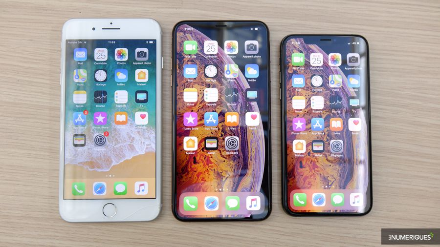Utiliser un iPhone Xs Max d'une seule main relève de l'utopie pour une grande partie de la population. Il faudra presque toujours s'armer de ses deux pouces pour couvrir le terrain offert par l'écran. D'autant que certaines parties de l'interface ne paraissent pas vraiment adaptées à un écran si grand. On pense notamment au centre de contrôle, qu'il faut aller chercher depuis le coin supérieur droit de l'écran. Autant dire le bout du monde.
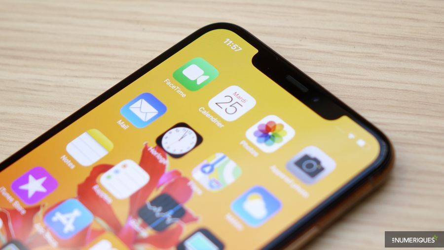
Cette année, le bouton en façade et le lecteur d'empreintes digitales ont définitivement été oubliés. Cela amène donc cet iPhone Xs Max à adopter les nouveaux gestes de navigation introduits par l'iPhone X. D'un glissement de pouce depuis le bas de l'écran, il est possible d'accéder aux applications ouvertes, de passer d'une app à une autre ou tout simplement de revenir à l'écran d'accueil. Tout cela est plutôt facile à prendre en main.
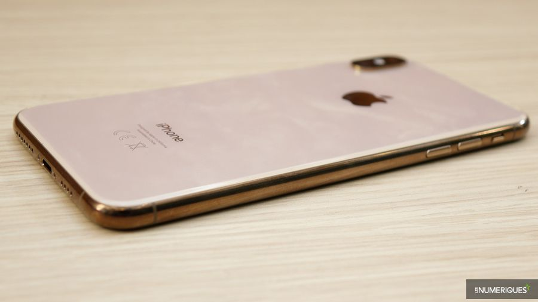
Comme sur l'iPhone X, le déverrouillage biométrique s'appuie sur la reconnaissance faciale Face ID. Apple vante une augmentation de la vitesse de déverrouillage par rapport à la génération précédente. Cela ne saute pas véritablement aux yeux à l'usage, le dispositif restant particulièrement rapide et efficace. Il reste toujours un peu pénible d'avoir à systématiquement glisser le doigt sur l'écran pour arriver à l'accueil du smartphone. Une étape qui vient entraver la rapidité de l'ensemble à l'usage.
*
Apple n'a que peu modifié les codes esthétiques de sa génération 2018. On retrouve un cerclage en métal et une face arrière en verre. Cette dernière a été renforcée par rapport à celle de l'iPhone X, selon les dires de la marque. Sans surprise, les finitions restent exemplaires et l'iPhone Xs Max respire l'élégance. Les touches de contrôle du volume trouvent toujours leur place sur la tranche gauche du terminal, sous le commutateur de profils de notification..
Apple a fait passer l'étanchéité de son iPhone Xs Max un cran au-dessus de celle de l'iPhone X. Il passe d'une certification IP67 à IP68. Dans la pratique, cela se traduit par une étanchéité à une profondeur de 2 m maximum pendant 30 min, contre 1 m précédemment.
Les iPhone Xs et Xs Max sont les premiers smartphones de la marque à offrir une compatibilité double SIM. Cependant, en France, il faut compter sur un emplacement nano-SIM et une eSIM. Cette dernière n'est malheureusement pas vraiment exploitée dans l'Hexagone. À l'heure où nous écrivons ce test, aucun des opérateurs français n'annonce supporter cette eSIM pour l'iPhone Xs Max.
Comme pour les générations d'iPhone précédentes, le Xs Max n'intègre pas de prise mini-jack 3,5 mm. Cette année, Apple a même décidé de ne plus fournir d'adaptateur Lightning vers mini-jack. Un peu dur à avaler quand on dépense plus de 1 200 € pour un smartphone et que ledit adaptateur est vendu seul pour 10 €.
ÉCRAN
Après un premier essai réussi l'an dernier, Apple repart à l'assaut des écrans Oled avec son iPhone Xs Max. Ici, la dalle mesure 6,5 pouces (16,51 cm) de diagonale, pour une définition peu banale de 2 688 x 1 242 px. Si Apple fait dans l'extravagance côté définition, c'est que l'entreprise souhaite conserver la même résolution que sur le plus petit modèle, soit 458 ppp. de quoi obtenir un affichage suffisamment précis pour tous les usages.
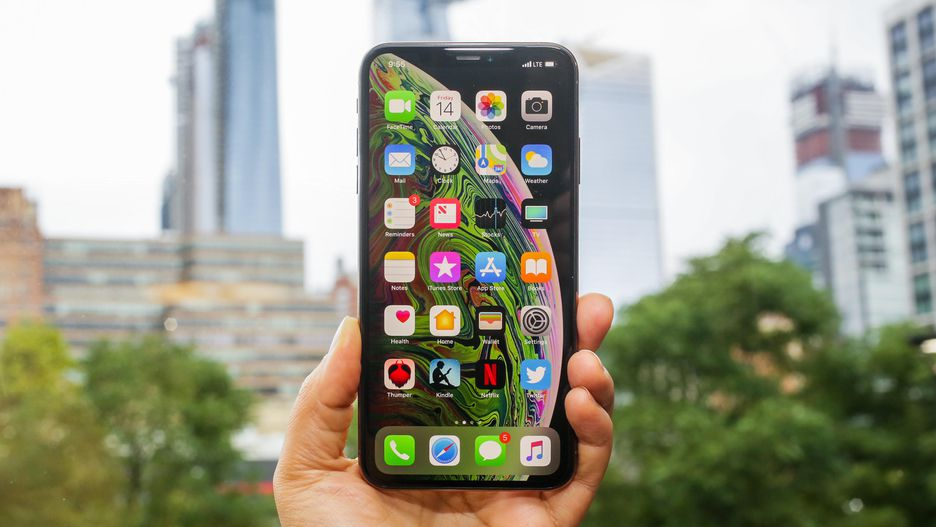
L'un des atouts de l'Oled est le contraste quasi infini qu'il offre. Un avantage indéniable face à l'écran LCD d'un iPhone 8 Plus, par exemple. L'iPhone Xs Max profite en outre d'une luminosité maximale de 602 cd/m² et un taux de réflexion lumineuse de 7 %. De quoi rester parfaitement lisible en plein soleil. Dans le noir, les iPhone peuvent descendre sous la barre de 1 cd/m², idéal pour ne pas être ébloui.
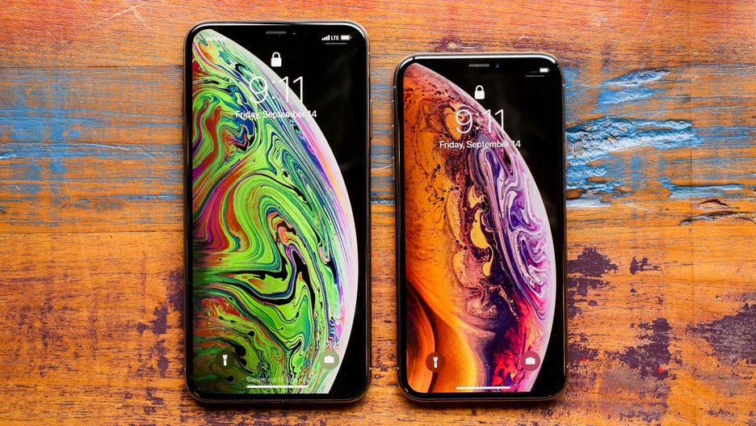
Fidèle à ses habitudes, Apple a soigné la colorimétrie de son écran. Nous mesurons un delta E à 1,4 et une température des couleurs à 6 800 K. D'excellentes valeurs qui placent le Xs Max dans le peloton de tête. L'iPhone grand format reste également une référence en matière de réactivité (retard tactile mesuré à 41 ms et rémanence nulle).
Interface & OS
Comme chaque année, nouvel iPhone rime avec nouvelle version d'iOS, désormais dans sa 12e itération. Parmi les nouveautés présentées par Apple dans cette nouvelle mouture, certaines sont appréciables, comme la réorganisation des notifications. Ces dernières se retrouvent désormais regroupées de manière plus logique que l'empilement proposé auparavant.
La fonction "temps d'écran" permet pour sa part d'avoir un œil sur ce qu'on fait avec son smartphone. On peut ainsi se rendre compte qu'on a passé beaucoup trop de temps à naviguer sur les réseaux sociaux ou à jouer à notre titre favori. Il est possible de programmer un temps à ne pas dépasser pour chaque catégorie ou chaque application. Une fonctionnalité intéressante, mais qui exige tout de même une certaine envie de se contrôler. Il est regrettable que le temps relevé ne soit que celui où l'application est affichée à l'écran. Les services de streaming musical, qui tournent souvent en arrière-plan, ne sont alors pris en compte que le temps de choisir une playlist. Mais a-t-on vraiment besoin de restreindre notre mélomanie ?
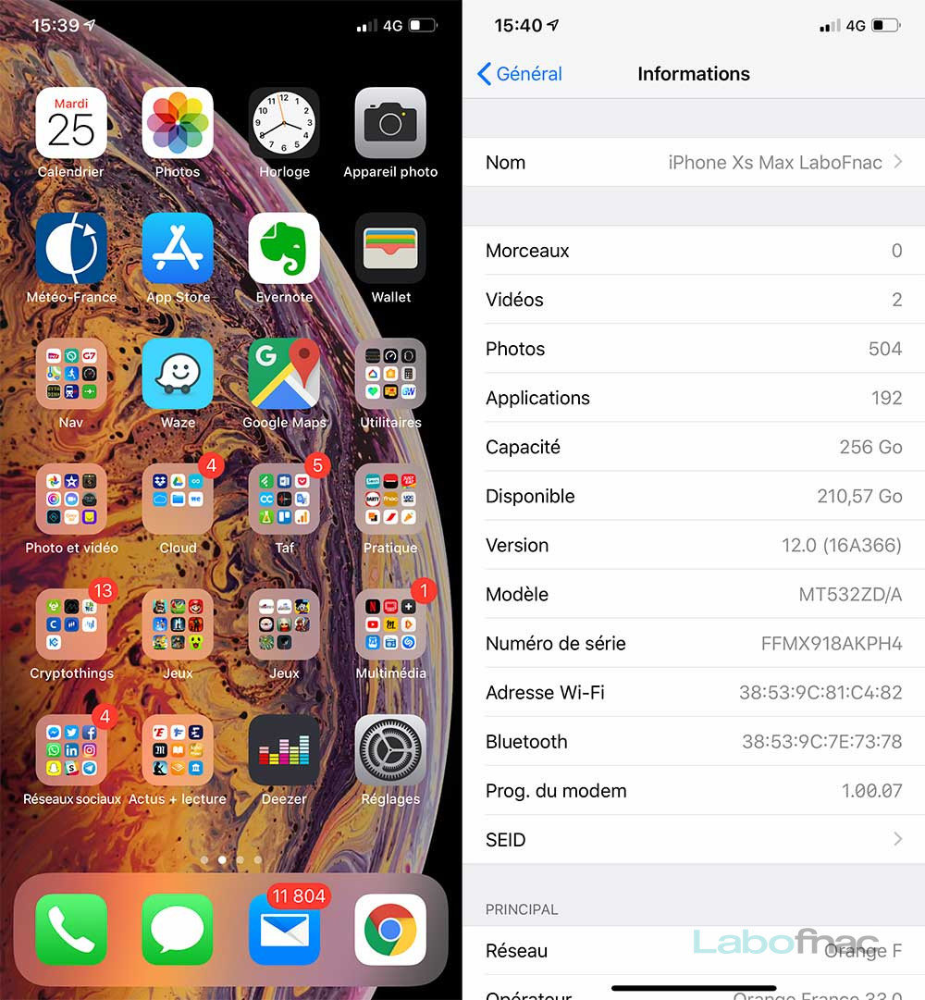 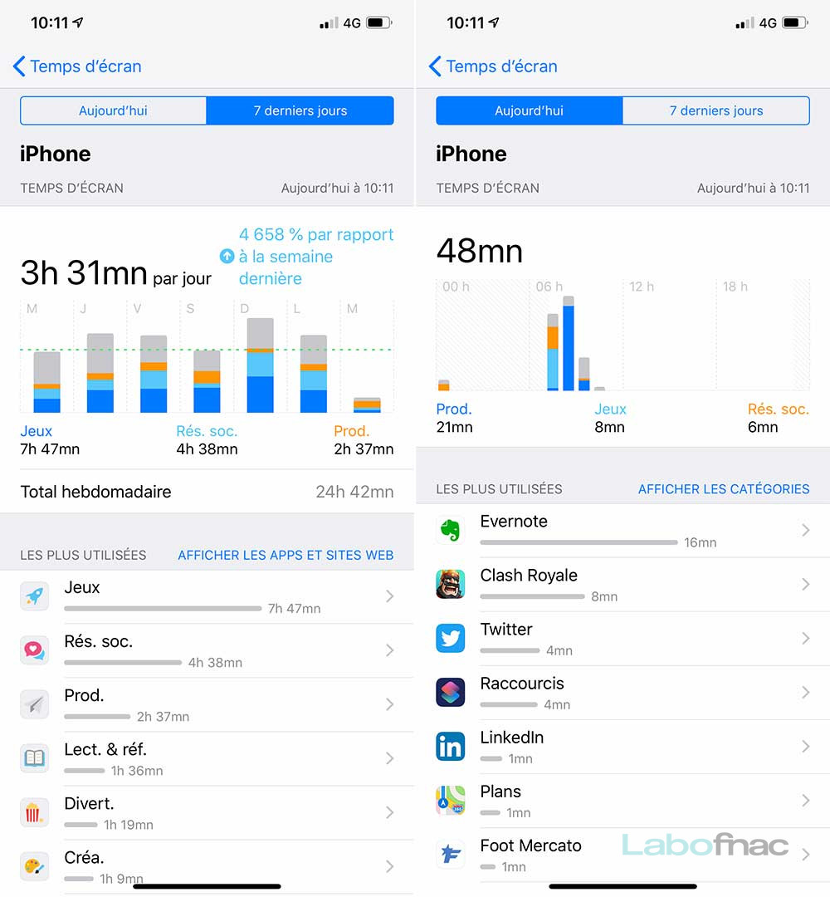L'iPhone Xs Max reprend surtout les nouveaux gestes introduits par l'iPhone X et le design sans bouton Home. La navigation à partir du bas de l'écran pour passer entre les applications, accéder aux apps ouvertes ou revenir à l'accueil est très agréable à utiliser. En revanche, bon nombre de fonctionnalités ne semblent pas avoir été adaptées à la taille gigantesque de l'écran. Il reste encore beaucoup trop d'actions à effectuer depuis le haut de cet afficheur géant auquel les pouces ont difficilement accès.
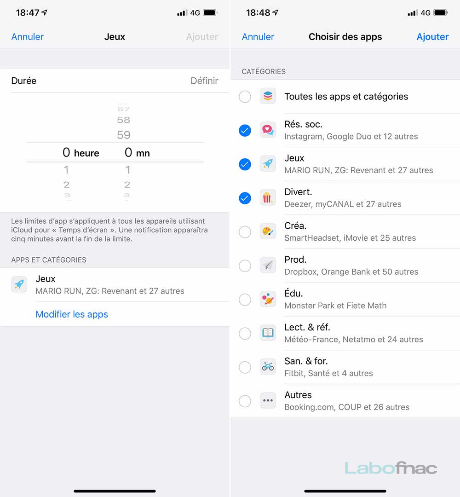 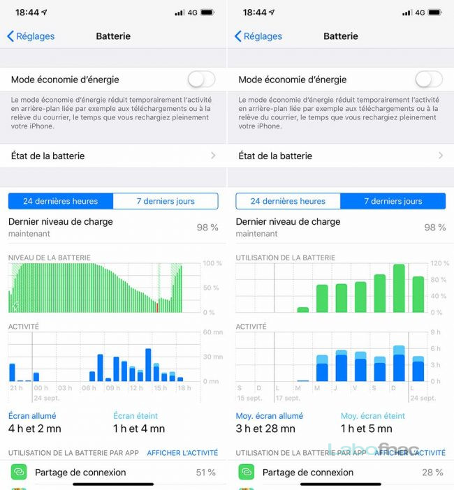
Loin de cette fonction qui nécessitera que l’on s’attarde dessus pour la maîtriser, Apple a aussi dépoussiéré ses Animojis. L’année dernière, le fabricant avait inauguré des Emoji animés avec iOS 11, exclusivement sur l’iPhone X. Les constructeurs de smartphones Android ont consciencieusement repris l’idée, l’améliorant même au passage. La firme à la pomme se devait donc de faire évoluer son concept. C’est chose faite avec iOS 12. D’abord avec de nouveaux Animoji (un fantôme, un T-Rex, un tigre et un koala). Ensuite et surtout : l’utilisateur pourra créer un Memoji, soit un emoji animé à son image. Ce que propose déjà Samsung sur les Galaxy S9 et le Note 9. Apple copie donc Samsung… qui lui-même l’avait copié en premier lieu.
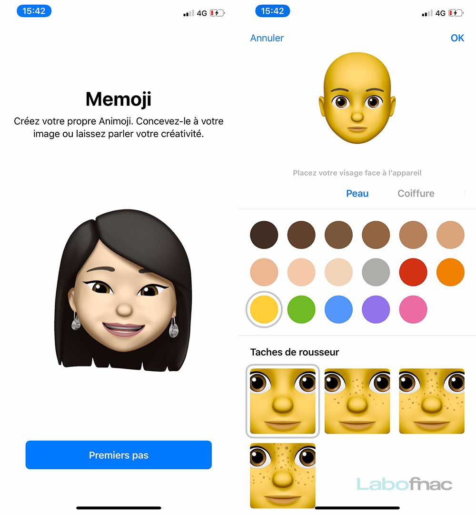 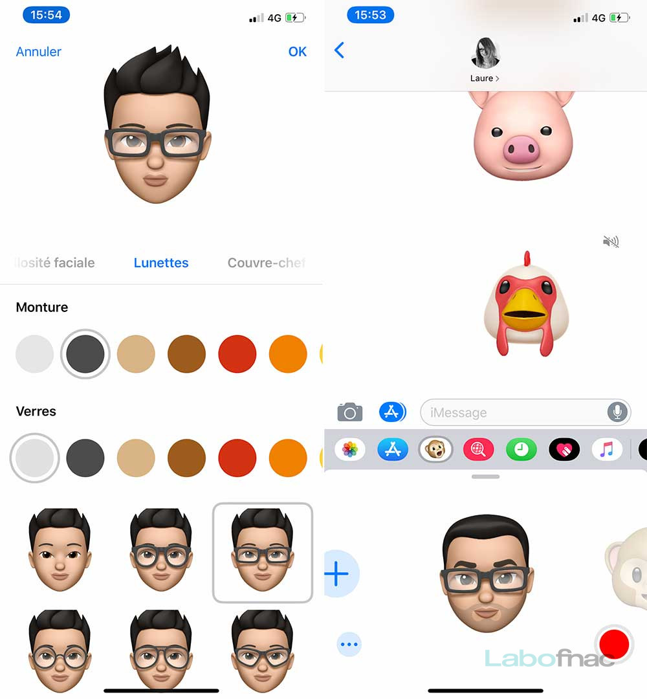
Audio
La disparition de la prise mini-jack 3,5 mm a fait grincer des dents au moment de la sortie de l'iPhone 7. La disparition de l'adaptateur Lightning vers mini-jack cette année fait passer Apple au stade supérieur. Nous pouvons comprendre que la tendance actuelle pousse vers les dispositifs sans-fil, mais ne pas proposer d'alternative par défaut est peu appréciable. Surtout, compte tenu du prix — stratosphérique — du terminal et de celui de l'adaptateur (10 €), Apple passe pour un vilain grippe-sou. Comme nous l'avions fait pour le HTC U12+ qui était livré sans adaptateur, nous limitons la note de la partie audio de l'iPhone Xs Max à 2 étoiles.
La qualité de la sortie audio Bluetooth dépendra quasi uniquement du casque qu'on appairera au Xs Max.
Dommage qu'Apple fasse cette concession, car pour le reste, la performance de l'iPhone Xs Max est louable. Il bénéficie de deux haut-parleurs, l'un en façade, l'autre sur la tranche inférieure. Cela permet au Xs Max de délivrer une belle stéréo et une puissance confortable. Pour regarder des vidéos, le rendu audio est au-dessus de la moyenne. On peut tout de même reprocher à ces haut-parleurs un léger manque de précision dans les aigus à plein volume, mais rien de trop handicapant.
PHOTO
PERFORMANCES
Au moment de leur sortie, les iPhone sont des modèles de fluidité. L'iPhone Xs Max n'échappe pas à la règle et montre une vélocité à toute épreuve. Avec sa puce A12 Bionic maison, il délivre une performance confortable dans tous les usages. Les 4 Go de RAM sur lesquels le Xs Max s'appuie suffisent pour leur part à gérer efficacement les applications ouvertes et à passer de l'une à l'autre sans aucun ralentissement.
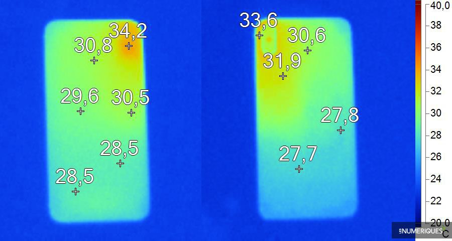Températures relevées après 10 min d'enregistrement vidéo Full HD.
L'iPhone Xs Max parvient à maîtriser sa montée en température externe. Qu'on le soumette à de lourdes tâches sollicitant son CPU et son iGPU ou à l'enregistrement de vidéos, il ne dépasse pas les 36 °C en surface. Pas de quoi gêner la prise en main donc.
Pour le jeu vidéo, Apple exploite un iGPU maison. Comme chaque fois, le travail d'optimisation mis en place fonctionne sans anicroche. Les jeux 3D gourmands sont avalés sans mal par l'iPhone Xs Max. La fluidité est au rendez-vous, même dans les meilleurs niveaux de graphismes. Solide, comme bien souvent pour les iPhone.
APPAREIL PHOTO
Un néophyte qui découvre les caractéristiques photographiques de ce nouvel iPhone Xs Max ne verra pas de différence avec celles du précédent iPhone X. Et pour cause, tout ou presque est identique puis que l’on retrouve ici un double module photo, intégrant deux capteurs de 12 Mpx. Le premier dispose d’une optique de 28 mm (f/1,8), contre 56 mm (f/2,4) pour le second. Elles sont stabilisées dans les deux cas. Exactement comme sur l’iPhone X donc. La seule chose qui change est la taille des pixels du capteur principal, qui passent de 1,22 µm à 1,4 µm. Cela n’a l’air de rien, mais les connaisseurs auront immédiatement compris que ce changement est fondamental, car la taille de ces pixels influent sur les performances en basse luminosité. En effet, plus ces pixels sont gros, plus ils sont capables de capturer de la lumière. Voilà pour la théorie.
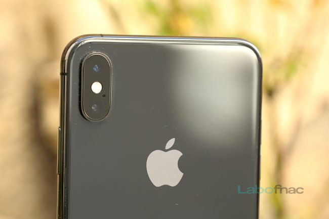Dans notre Labo, nous avons effectivement pu constater une meilleure sensibilité pour le capteur principal de l’iPhone Xs Max. Notre scène de test sous éclairage tamisé (500 lux) ressort avec un petit manque de détails dans les zones claires, mais le résultat reste bon dans l’ensemble. Le capteur secondaire pâtit de la petite taille de ses photosites et de l’ouverture plus faible de l’optique qui lui est associée, et peine notamment à restituer les textures. Sa prestation reste néanmoins dans la moyenne, alors qu’il prend l’avantage lorsque les conditions de luminosité s’améliorent. Il délivre alors une résolution à la fois excellente et homogène permettant de recadrer l’image jusqu’à 65 % sans perte de détails perceptible sur un tirage de 20 x 30 cm. Il faut se contenter, avec le capteur principal, d’une possibilité de recadrage à peine supérieure à 40 %, et l’homogénéité n’est pas au rendez-vous avec des écarts de qualité montant à 30 %. Le centre et les bords de l’image présentent néanmoins une qualité similaire, et Apple propose des optiques de qualité dans les deux cas.
Passons maintenant au mode Portrait. Certes, tout n’est pas encore parfait avec ce dernier et il connaît toujours quelques ratés. Mais il progresse lui aussi, avec une vitesse de déclenchement accrue, un autofocus plus précis et plus rapide et une meilleure reconnaissance des formes et des visages. Dans ce mode, il vous arrivera encore de rater des photos. Mais beaucoup moins qu’avant. On apprécie aussi l’intégration dans l’interface de la possibilité d’ajuster l’effet de bokeh (la profondeur de champ) après-coup. Il n’est pour l’instant pas possible d’effectuer cet ajustement en temps réel, mais la prochaine mise à jour d’iOS 12 le permettra. Notez aussi que certains smartphones Android proposent cette fonction depuis longtemps, mais c’est une nouveauté sur iOS. L’application photo dispose également d’un nouvel onglet qui regroupe les albums et les souvenirs générés automatiquement, un peu comme sur Google Photos. On y trouve aussi des suggestions de partage automatisées elles aussi, pour envoyer en deux clics un cliché à une personne qui se trouve dessus.

À l’avant, l’iPhone Xs Max est équipé d’un module comprenant un capteur de 7 mégapixels et une optique ouvrant à f/2.2 que nous avons également soumis à notre protocole de test. Sans surprise, les résultats sont moins convaincants de ce côté. Globalement décevante, la résolution apparaît en plus très inégale, avec un niveau de détails supérieur en périphérie qu’au centre de l’image. Dommage, pour un appareil essentiellement destiné à la prise de selfies. Le manque de luminosité détériore encore un peu plus la qualité d’image en entraînant un lissage trop prononcé. Il n’y a finalement plus que l’optique pour sauver l’appareil avant de l’iPhone Xs Max, même s’il laisse apparaître des aberrations chromatiques tout de même très visibles par endroit.
Côté vidéo, les iPhone Xs s’avèrent excellents puisqu’ils permettent de capturer dans une résolution montant jusqu’à l’UHD-4K, à 60 i/s. Avec toujours le choix entre six résolutions intermédiaires si vous n’avez pas besoin de vidéos aussi volumineuses.
Au final, Apple comble avec les iPhone Xs et Xs Max une partie du retard qu’il avait pris en matière de photo. Globalement, les duettistes ne sont pas meilleurs dans ce registre que les Samsung Galaxy S9+, Note 9, et surtout que le Huawei P20 Pro. Mais ils s’en rapprochent, ou font même aussi bien, dans plusieurs registres. Les possesseurs des nouveaux Xs n’auront donc plus à rougir de la comparaison. Ce qui n’est déjà pas si mal. Même si on aurait préféré qu’Apple nous sorte de son chapeau des évolutions propres à mettre la concurrence derrière, au moins pour un temps. D’autant que les différentes améliorations logicielles font qu’il est encore plus facile et agréable de photographier avec les deux nouveaux smartphones de la firme à la pomme.
CONCLUSION
On peut trouver l'iPhone Xs Max avare en nouveautés et excessivement cher, mais Apple est parvenu à reproduire la très bonne recette de l'iPhone X. Le Xs Max est au marché du smartphone ce que la cuisine gastronomique est à celui de la restauration. On a l'impression de payer très cher pour peu de choses, mais cela reste excellent.